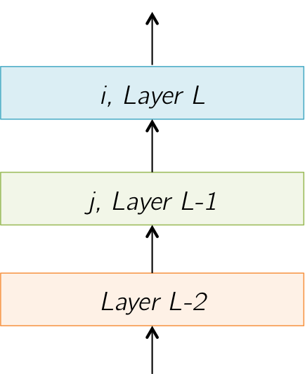

Backpropagation
Multiple Layers Consider a network made of multiple layers, connected to some loss function \( E(\cdot) \) at the top. We'll look at a part of this network connected as shown in the figure below. We'll index these layers by \(\{\cdots, L-2, L-1, L, \cdots\}\). Further, we'll index individual neurons in these layers by \(i, j\) as shown in the figure. 
A Single Layer
Let's zoom into a single layer, \(L\), made up of a number of neurons, each of which receives
outputs from the neurons of layer \(L-1\) as input. The outputs of neurons of layer \(L\) are denoted by
\(o^L_i\), and those of layer \(L-1\) are denoted by \(o_j^{L-1}\).
(Remember that we decided to index neurons in layers \(L\) and \(L-1\) by \(i\) and \(j\) resp.)
The weight connecting neuron \(i\) in layer \(L-1\) to neuron \(j\) in layer \(L\) is denoted by \(w_{i,j}\).

Neuron Equations The output of a neuron in layer \(L\) is given by: $$ o_i^L = \varphi(\text{net}_i^L) = \varphi\left(\sum_{k=1}^n w_{i,k}\cdot o_k^{L-1}\right)$$ where \(\varphi(\cdot)\) is some non-linearity such as the sigmoid or tanh. Using the chain rule, we'll break up the derivative of the network error \(E\) with respect to the neuron weight \(w_{i,j}\): \begin{align} \Delta w_{i,j} = \frac{\partial E}{\partial w_{i,j}} &= \left( \frac{\partial E}{\partial \text{net}_i^L} \right) \cdot \left( \frac{\partial \text{net}_i^L}{\partial w_{i,j}} \right) = \delta_i^L \cdot \left( \frac{\partial \text{net}_i^L}{\partial w_{i,j}} \right)\\ \end{align} Now, we'll solve each component above one by one:
- \( \left(\displaystyle\frac{\partial \text{net}_i^L}{\partial w_{i,j}}\right) = \displaystyle\frac{\partial \left(\displaystyle\sum_{k=1}^n w_{i,k}\cdot o_k^{L-1}\right)}{\partial w_{i,j}} = o_j^{L-1} \)
-
\( \delta_i^L \) is provided by the layer \(L+1\) above.
This means that at layer \(L\), we'll have to compute and pass \( \delta_j^{L-1} \) to the layer \(L-1\) below. Let's compute it then!
\begin{align}
\delta_j^{L-1} = \frac{\partial E}{\partial \text{net}_j^{L-1}} &=
\left( \frac{\partial E}{\partial o_j^{L-1}} \right)\cdot\left( \frac{\partial o_j^{L-1}}{\partial \text{net}_j^{L-1}} \right) \\
&=
\left( \displaystyle\sum_{i=1}^m \frac{\partial E}{\partial \text{net}_i^L} \cdot \frac{\partial \text{net}_i^L}{\partial o_j^{L-1}} \right)\cdot\left( \frac{\partial o_j^{L-1}}{\partial \text{net}_j^{L-1}} \right)
\end{align}
The sum above arises because \(o_j^{L-1}\) is used by all neurons \(\{i\}\) in layer \(L\). Thus, the total error flowing downwards into \(\{j\}\) is the sum of the errors from each of the neurons in layer \(L\). Let's examine the components:
- \( \displaystyle\frac{\partial E}{\partial \text{net}_i^L} = \delta_i^L \) by definition and is passed from the layer \(L+1\) above layer \(L\)
- \( \displaystyle\frac{\partial \text{net}_i^L}{\partial o_j^{L-1}} = \displaystyle\frac{\partial\left(\displaystyle\sum_{k=1}^n w_{i,k}\cdot o_k^{L-1}\right)}{\partial o_j^{L-1}} = w_{i, j} \)
- \( \displaystyle\frac{\partial o_j^{L-1}}{\partial \text{net}_j^{L-1}} = \displaystyle\frac{\partial \left(\varphi(\text{net}_j^{L-1})\right)}{\partial \text{net}_j^{L-1}} = \varphi'(\text{net}_j^{L-1}) \) If \(\varphi(\cdot)\) is a sigmoid, then \(\varphi'(\cdot) = \varphi(\cdot) (1 - \varphi(\cdot))\) If \(\varphi(\cdot)\) is tanh, then \(\varphi'(\cdot) = (1 - \varphi^2(\cdot))\)
Matrix Form Putting the above equations into matrix form, we get: $$ \boxed{\left( \Delta W \right)_{m\times n} = {\left(\delta^L\right)}_{m\times 1} \times {\left( (o^{L-1})^T \right)}_{1\times n}} $$ and $$ \boxed{\left( \delta^{L-1} \right)_{n\times 1} = \left(\varphi'(net^{L-1})\right)_{n\times 1} \circ \left(W^T_{n\times m} \times \delta^L_{m\times 1} \right)} $$